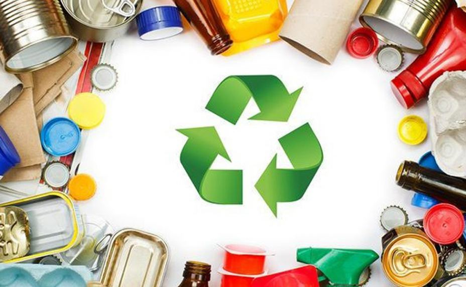

Recycle Ecology APP
Como Funciona
1.Separação: Antes de solicitar uma coleta, os resíduos recicláveis precisam ser higienizados, separados e embalados da maneira correta para facilitar o trabalho da coleta e separação.

2.Agendamento: Depois de separar os materiais, é a hora de entrar no Aplicativo Recycle e procurar pela extação de coleta mais proxima da sua localização ou verifique os horarios da coleta seletiva da sua região.
3.Coleta: Ao depositar seu lixo reciclado em uma de nossas extações não se esqueça de Acessar O Aplicativo Recycle, acessar a sua area de pontuação, resgatar seus pontos e troca-los por cashbacks e produtos de nossos parceiros.

4.Impacto: Finalizar uma coleta pelo Recycle é contribuir para o meio ambiente e, de quebra, trocar seus pontos por produtos e mercadorias. Valorize o trabalho de quem faz a reciclagem acontecer!